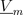

,
,
Basic components of the FundamentalWave library for modeling magnetic circuits. Machine specific components are located at Machines.Components.
Extends from Modelica.Icons.Package (Icon for standard packages).
| Name | Description |
|---|---|
Crossing | Crossing of two branches |
EddyCurrent | Constant loss model under sinusoidal magnetic conditions |
Ground | Magnetic ground |
Idle | Idle running branch |
MultiPhaseElectroMagneticConverter | Multi phase electro magnetic converter |
Permeance | Salient Permeance |
Reluctance | Salient reluctance |
Short | Short cut branch |
SinglePhaseElectroMagneticConverter | Single phase electro magnetic converter |
Grounding of the complex magnetic potential. Each magnetic circuit has to be grounded at least one point of the circuit.
| Type | Name | Description |
|---|---|---|
PositiveMagneticPort | port_p | Complex magnetic port |
The salient reluctance models the relationship between the complex magnetic potential difference
 and the complex magnetic flux ,
which can also be expressed in terms complex phasors:
Extends from Modelica.Magnetic.FundamentalWave.Interfaces.PartialTwoPortElementary (Two magnetic ports for textual modeling).
| Type | Name | Default | Description |
|---|---|---|---|
SalientReluctance | R_m | Magnetic reluctance in d=re and q=im axis |
| Type | Name | Description |
|---|---|---|
PositiveMagneticPort | port_p | Positive magnetic port of fundamental wave machines |
NegativeMagneticPort | port_n | Negative magnetic port of fundamental wave machines |
The salient permeance models the relationship between the complex magnetic potential difference
and the complex magnetic flux :
Extends from Modelica.Magnetic.FundamentalWave.Interfaces.PartialTwoPortElementary (Two magnetic ports for textual modeling).
| Type | Name | Default | Description |
|---|---|---|---|
SalientPermeance | G_m | Magnetic permeance in d=re and q=im axis |
| Type | Name | Description |
|---|---|---|
PositiveMagneticPort | port_p | Positive magnetic port of fundamental wave machines |
NegativeMagneticPort | port_n | Negative magnetic port of fundamental wave machines |
The eddy current loss model with respect to fundamental wave effects is designed in accordance to FluxTubes.Basic.EddyCurrent.

|
Due to the nature of eddy current losses, which can be represented by symmetric
conductors in an equivalent electric circuit (Fig. 1), the respective
number of phases  has to be taken into account.
Assume that the conductances
of the equivalent circuit are
has to be taken into account.
Assume that the conductances
of the equivalent circuit are  ,
the conductance for the eddy current loss model is determined by
,
the conductance for the eddy current loss model is determined by
where  is the number of turns of the symmetric electro magnetic coupling.
is the number of turns of the symmetric electro magnetic coupling.
For such an phase system
the relationship between the voltage and current space phasors
and the magnetic flux and magnetic potential difference phasor is
,
,
where  and
and  are the phase voltages and currents, respectively.
are the phase voltages and currents, respectively.
The dissipated loss power
can be determined for the space phasor relationship of the voltage and current space phasor.
Extends from Modelica.Magnetic.FundamentalWave.Interfaces.PartialTwoPortElementary (Two magnetic ports for textual modeling) and Modelica.Thermal.HeatTransfer.Interfaces.PartialElementaryConditionalHeatPort (Partial model to include a conditional HeatPort in order to dissipate losses, used for textual modeling, i.e., for elementary models).
| Type | Name | Default | Description |
|---|---|---|---|
Conductance | G | Equivalent symmetric loss conductance | |
Boolean | useHeatPort | false | =true, if heatPort is enabled |
final Temperature | T | 273.15 | Fixed device temperature if useHeatPort = false |
| Type | Name | Description |
|---|---|---|
PositiveMagneticPort | port_p | Positive magnetic port of fundamental wave machines |
NegativeMagneticPort | port_n | Negative magnetic port of fundamental wave machines |
HeatPort_a | heatPort | Optional port to which dissipated losses are transported in form of heat |
The single phase winding has an effective number of turns,  and a respective orientation of the winding,
and a respective orientation of the winding,  . The current in winding is
. The current in winding is  .
.
The total complex magnetic potential difference of the single phase winding is determined by:

In this equation the magnetomotive force is aligned with the orientation of the winding.
The voltage  induced in the winding depends on the cosine between the orientation of the winding and the angle of the complex magnetic flux. Additionally, the magnitudes of the induced voltages are proportional to the respective number of turns. This relationship can be modeled by means of
induced in the winding depends on the cosine between the orientation of the winding and the angle of the complex magnetic flux. Additionally, the magnitudes of the induced voltages are proportional to the respective number of turns. This relationship can be modeled by means of

The single phase electromagnetic converter is a special case of the MultiPhaseElectroMagneticConverter
MultiPhaseElectroMagneticConverter
| Type | Name | Default | Description |
|---|---|---|---|
Real | effectiveTurns | Effective number of turns | |
Angle | orientation | Orientation of the resulting fundamental wave V_m phasor | |
final Complex | N | effectiveTurns * Modelica.ComplexMath.exp(Complex(0, orientation)) | Complex number of turns |
| Type | Name | Description |
|---|---|---|
PositivePin | pin_p | Positive pin |
NegativePin | pin_n | Negative pin |
PositiveMagneticPort | port_p | Positive complex magnetic port |
NegativeMagneticPort | port_n | Negative complex magnetic port |
Each phase  of an phase winding has an effective number of turns,
of an phase winding has an effective number of turns,  and an respective winging angle
and an respective winging angle  and a phase current .
and a phase current .
The total complex magnetic potential difference of the multi phase winding is determined by:

In this equation each contribution of a winding magnetomotive force on the total complex magnetic potential difference is aligned with the respective orientation of the winding.
The voltages induced in each winding depend on the cosines between the orientation of the winding and the angle of the complex magnetic flux. Additionally, the magnitudes of the induced voltages are proportional to the respective number of turns. This relationship can be modeled by means of

for  and is also illustrated by the following figure:
and is also illustrated by the following figure:

|
SinglePhaseElectroMagneticConverter
| Type | Name | Default | Description |
|---|---|---|---|
Integer | m | 3 | Number of phases |
Real | effectiveTurns[m] | Effective number of turns | |
Angle | orientation[m] | Orientation of the resulting fundamental wave field phasor |
| Type | Name | Description |
|---|---|---|
PositivePlug | plug_p | Positive plug |
NegativePlug | plug_n | Negative plug |
PositiveMagneticPort | port_p | Positive complex magnetic port |
NegativeMagneticPort | port_n | Negative complex magnetic port |
This is a simple idle running branch.
Extends from Modelica.Magnetic.FundamentalWave.Interfaces.PartialTwoPortElementary (Two magnetic ports for textual modeling).
| Type | Name | Description |
|---|---|---|
PositiveMagneticPort | port_p | Positive magnetic port of fundamental wave machines |
NegativeMagneticPort | port_n | Negative magnetic port of fundamental wave machines |
This is a simple short cut branch.
Extends from Modelica.Magnetic.FundamentalWave.Interfaces.PartialTwoPort (Two magnetic ports for graphical modeling).
| Type | Name | Description |
|---|---|---|
PositiveMagneticPort | port_p | Positive magnetic port of fundamental wave machines |
NegativeMagneticPort | port_n | Negative magnetic port of fundamental wave machines |
This is a simple crossing of two branches. The ports port_p1 and port_p2 are connected, as well as port_n1 and port_n2.
| Type | Name | Description |
|---|---|---|
PositiveMagneticPort | port_p1 | Positive port_p1 connected with port_p2 |
PositiveMagneticPort | port_p2 | Positive port_p2 connected with port_p1 |
NegativeMagneticPort | port_n1 | Negative port_n1 connected with port_n2 |
NegativeMagneticPort | port_n2 | Negative port_n2 connected with port_n1 |
Generated 2018-12-12 12:11:04 EST by MapleSim.